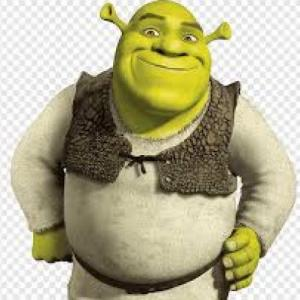
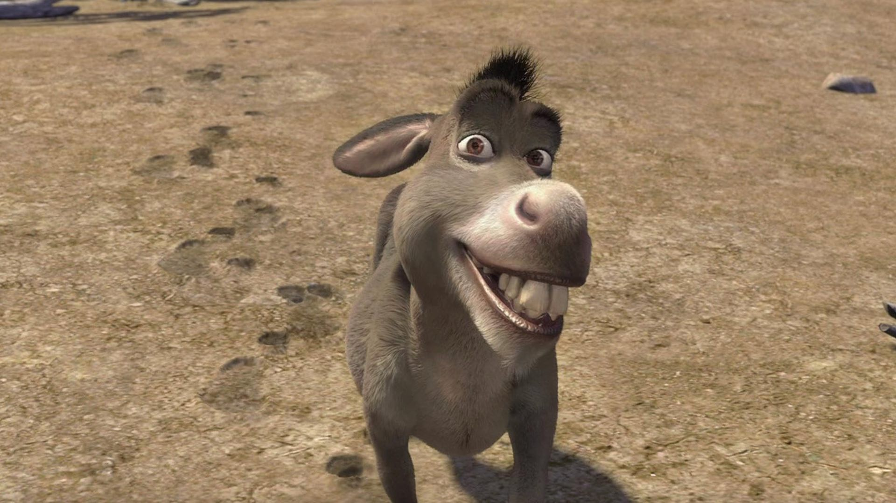

Shrek es un personaje de un ogro creado por el escritor estadounidense William Steig, Shrek es el protagonista del libro de 1990, adaptado por DreamWorks Animation en la película homónima del año 2001
Es un asno/burro parlante pequeño y un poco relleno/regordete, cuya facción más característica es su gran dentadura. Es el mejor amigo de Shrek y es muy buen amigo del Gato con Botas
